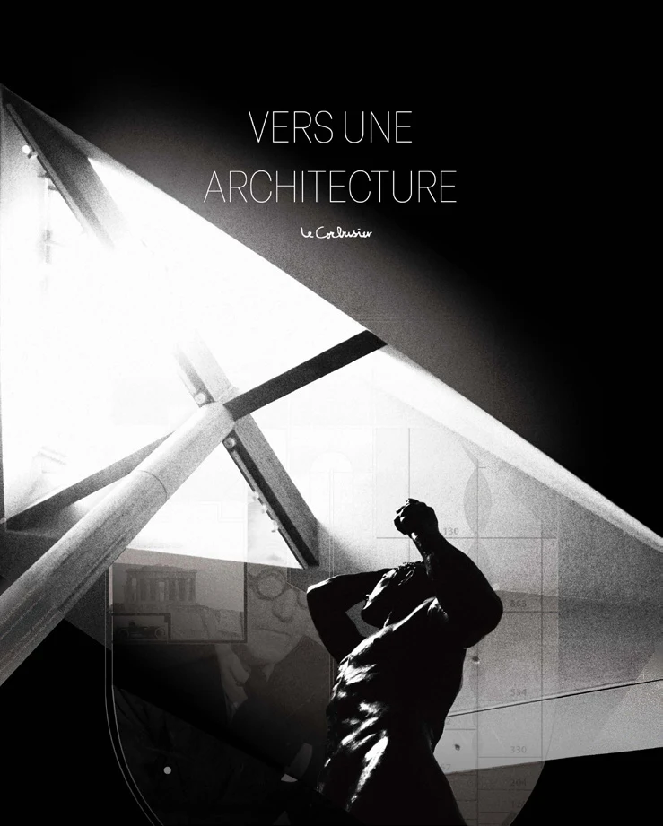
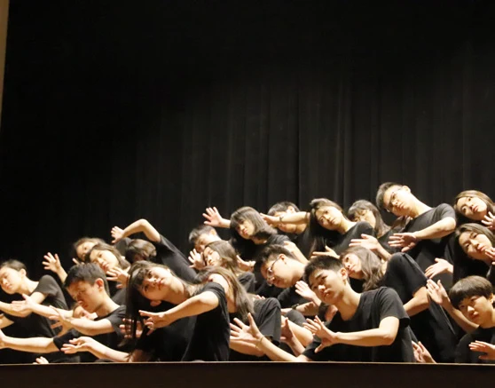
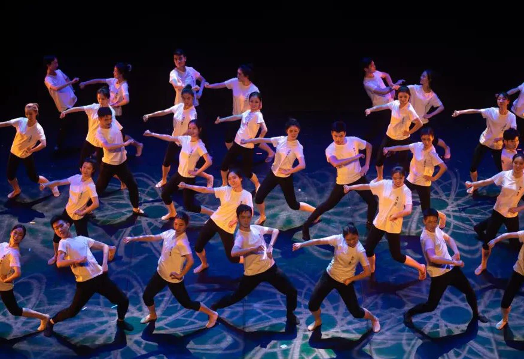
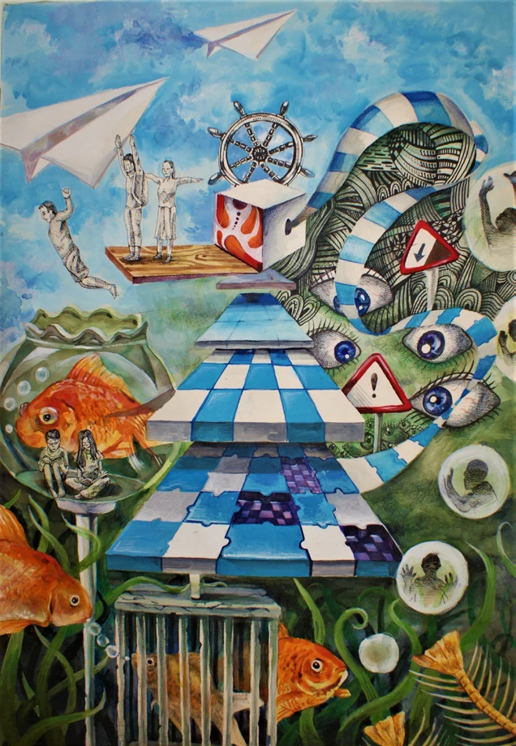
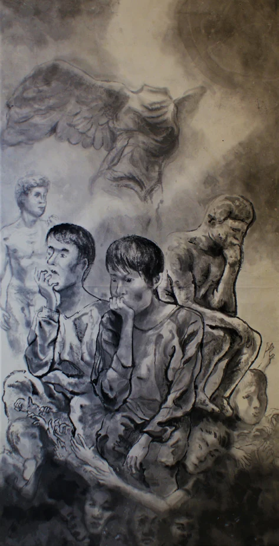
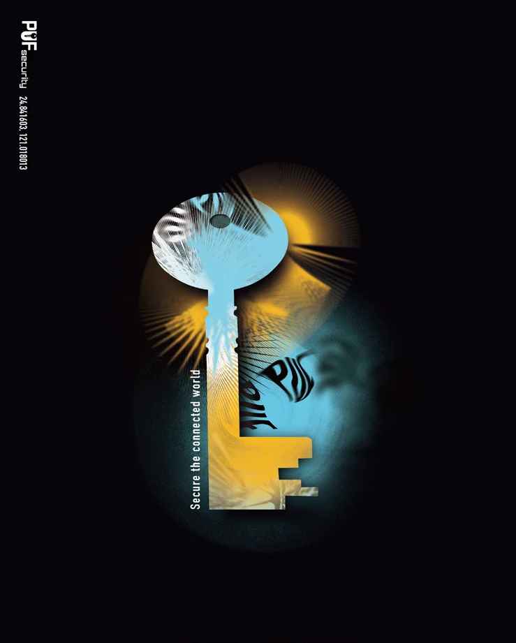
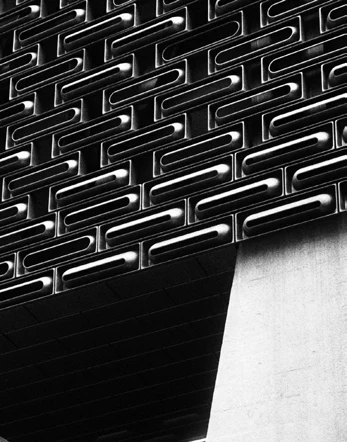
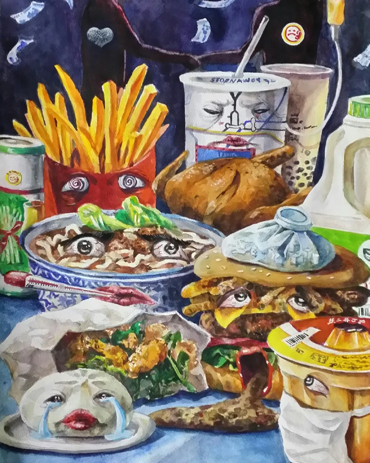
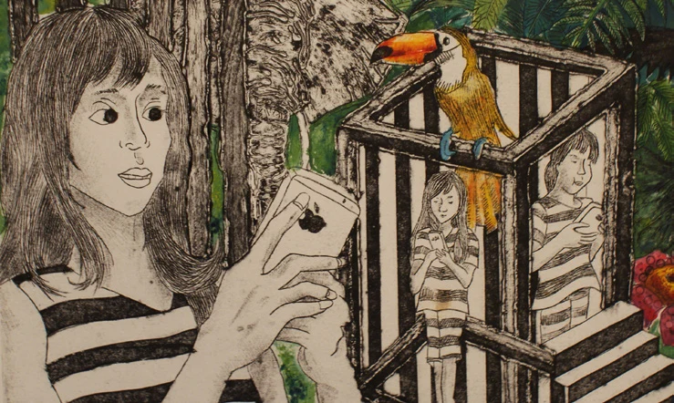
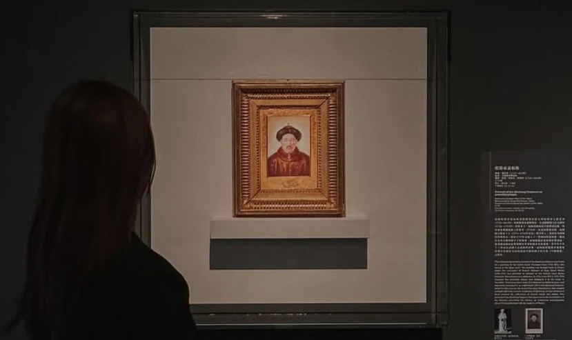

Selected Studies · Across mediaView drawing / image Other ways of observing, making, and inhabiting. Photography, drawing, graphic work, and performance form a parallel practice: experiments in attention, movement, composition, and the spaces between people.

Cabin Fever · Experimental theatre · Choreographer & director, 2019View drawing / image 
Shigshir · Mongolian ensemble dance · Tsinghua Dance Troupe, 2021View drawing / image 
Restraint and Observation · Watercolour, 2017View drawing / image 
Contemplation · Ink, 2017View drawing / image 
Vers Une Architecture · Book-cover design, 2022View drawing / image Photography · 2024View drawing / image 
Photography · 2023View drawing / image 
The Sickly Feast · Watercolour, 2017View drawing / image 
The Digital Cage · Printmaking, 2017View drawing / image 
Exhibition design · Hong Kong Palace Museum learning & engagement internship, 2024View drawing / image Project credits Selected work by Hao Chang
Next project / 008 Ancient Trails and Their Possible Futures